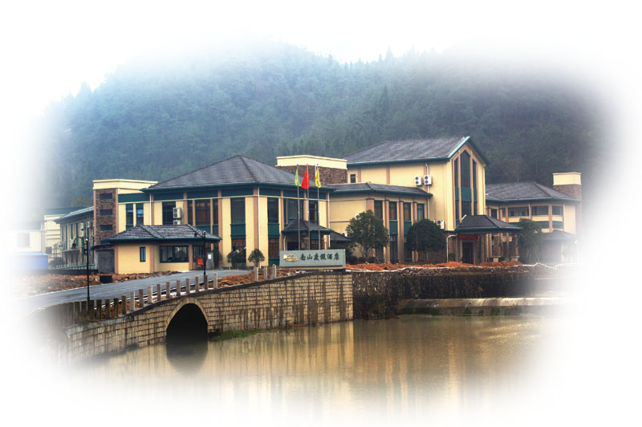

11:08 AM 嵊州
浙江省嵊州市 南山度假酒店
北纬N29°57′0.02″ 东经E120°40′48.81″海拔：21.38米
17:08 AM 宁波
宁波市北仑区小港街道新政村社区活动中心
北纬：N29°53′41.66″ 东经：E121°39′59.06″ 海拔：6.10米
查看大图
晚餐后去市中心锦江之星住宿路线
地点：浙江省宁波江东区中山东路501号锦江之星酒店,往西步行10-15分钟过桥就是天一广场
Tip1:记得带身份证，届时报洪燕燕的名字，酒店已经预付款，不需要额外支付费用。房间安排单独给大家。
Tip2:避免酒驾和疲劳驾驶
Tip3:酒店含早餐
查看大图
推荐杭州自驾路线：169 公里，2 小时 3 分钟
请尽量拼车，结对自驾前往。
导航设置关键字：宁波市北仑区新政村 或者 宁波市北仑区新政村村委
关键路径：萧山机场高速路口 =》G92杭州湾高速 =》G1501宁波绕城高速=》小港出口
也可以走世纪大道路线，具体以导航为主
查看大图
宁波火车东站、汽车南站、机场出发
船等非主流交通方式以及紧急情况处理
先找人搭讪，确定具体位置，后拨打15990024397寻求救援（救援时间与搭讪技巧成正比）
新郎家里电话：0574-86179477
新郎老爸电话：13586903503
新郎姐姐电话：15857496669